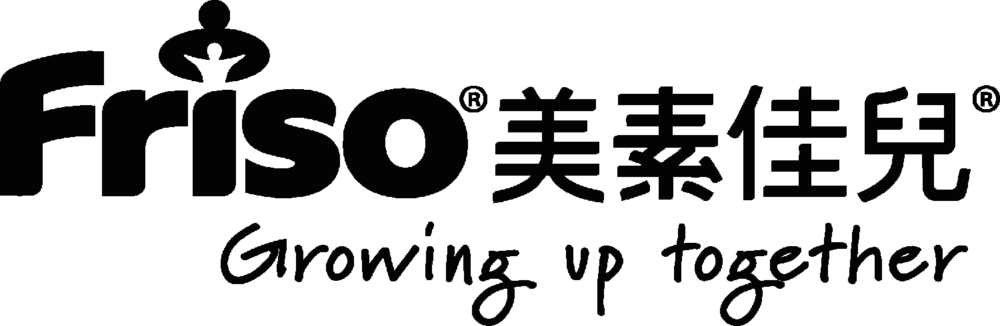
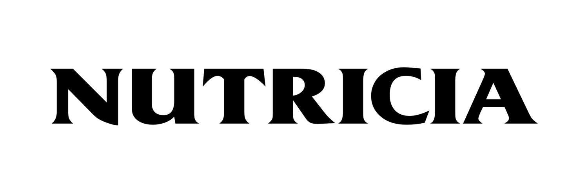
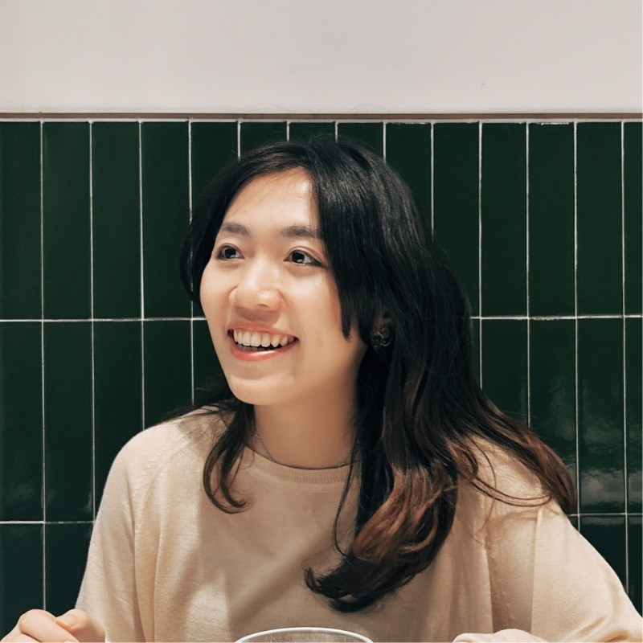
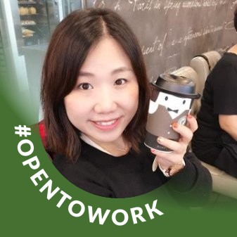
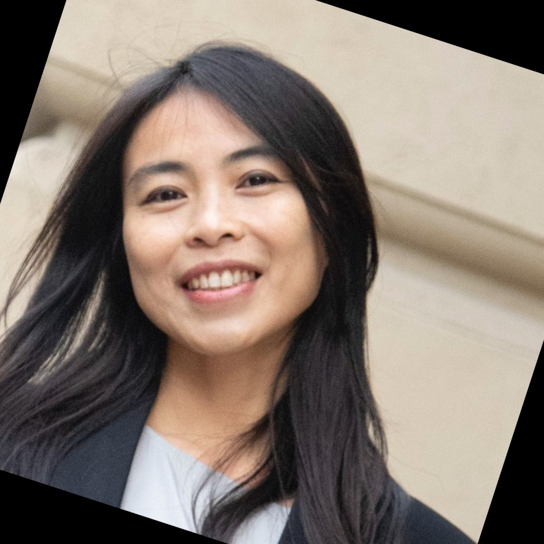
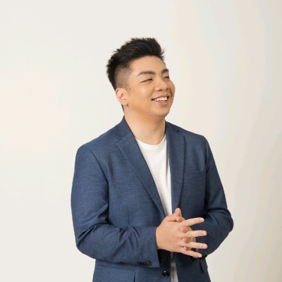

Hello, I’m
Ellen Timothy Wong
I was born and raised in Hong Kong, a city full of countless stories of the times.
To me, design isn't just a job, it's a way of how to see the world.
The ever-shifting landscape of demographics, culture, behavior, living standards, and economic fluctuations constantly reshapes customer needs. This leads me to a crucial question:
How can we develop flexible and sustainable design solutions that enable companies to survive in constant change?
This is the challenge that drives my thinking and exploration. I'm still exploring how far I can reach, and I'm excited to see what would I be. ^^
Anyway, keep walking on my journey~
Background
With over 15 years in the UX industry, I’ve been employed by and collaborated with various teams, including insurance companies such as AXA HK and Sunlife HK; startup companies like Social Career; media and technology companies like Wisers and Haymarket; e-learning companies such as Hanlan Information Ltd; and creative agencies such as Razorfish, Designer City, and StartJG.
Clients I’ve served:


Testimonials
“Ellen is a detail-oriented UX/UI strategist with a sharp eye for detail. Her extensive experience has been invaluable in providing insightful advice, helping the team see things from different angles. She's easy to talk to and always open to new ideas. Even though our time together was brief, I thoroughly enjoyed it and learned a lot!”

“I work closely with Ellen, she is honest, frank, careful perfectionist, Initiative，compassionate and genuinely well rounded. she have a strong experience in areas such as UI design and front-end coding. In my opinion, Ellen's unwavering study different technical field, especially in user experience. She often took the initiative to get things started and picked up new tasks. I'm happy to work with her.”

“Ellen is a true pleasure to have as a colleague. A team player, passionate about quality, comfortable in challenging old concepts but always in a respectful way. Her approach to UX design is forward-thinking and centred in understanding the audience her UX is designed for. She consistently brings creative ideas and alternative perspectives and can apply them practically to code on the page.”
“Ellen's blend of technical skill and ability to apply theory was an asset to the team in which I worked with her. Her input was instrumental in getting project deliverables complete on time and to a good standard. Ellen’s thinking is cutting edge and even in unfamiliar situations, she can adapt well to the working environment and technologies.”
“Ellen is one of the most passionate and result-oriented UX designer I have met. Her resilience to having the best experience for users are admirable. She would do everything to ensure things are tested and delivered. I enjoy a lot working with her and hope there would be further chance in the future!”

“Ellen is one of the best UX/UI Managers I have ever seen. We were in the digital insurance mobile team for 2+ years. She has a concrete understanding of the product vision and strategy. Her meticulous attitude also drives the team to achieve higher. It was a fruitful journey, and I highly recommend Ellen if you want a self-motivated design manager to push the product quality beyond the above.”
